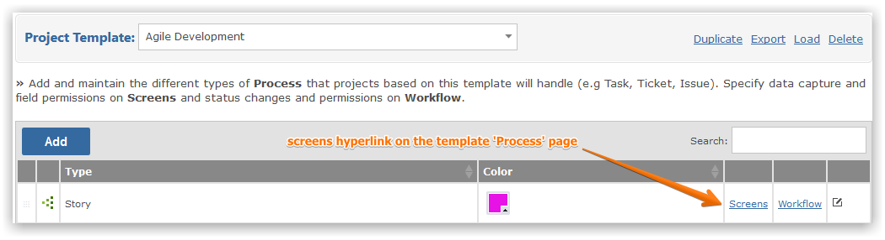
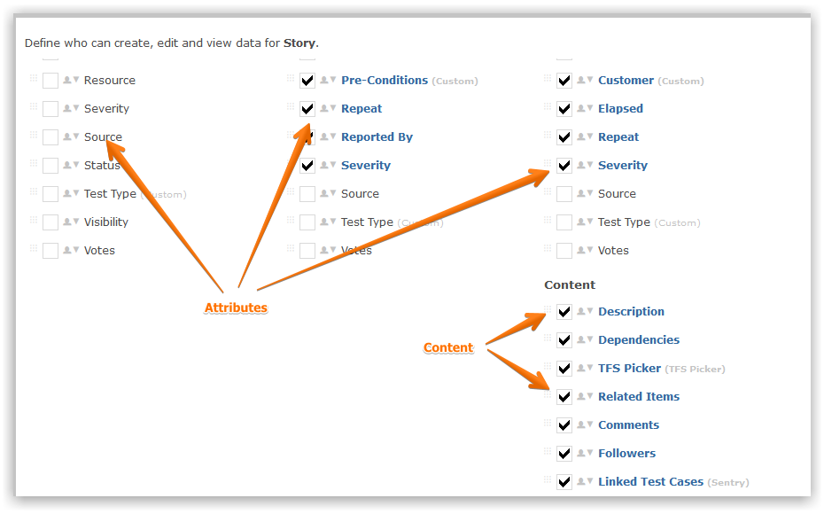
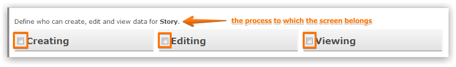
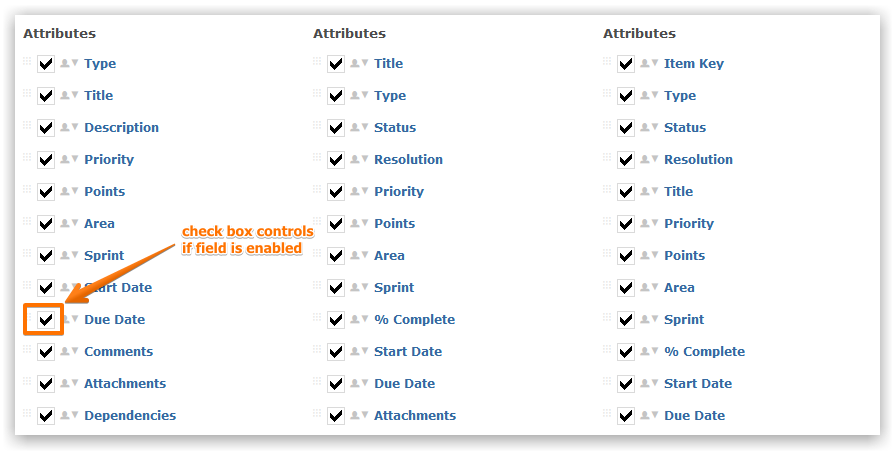
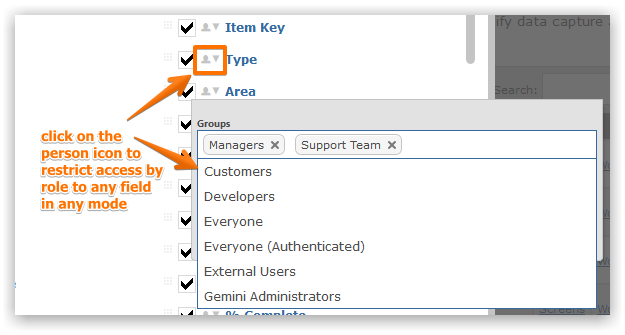
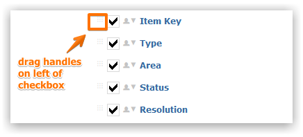

Once you have created a Process definition, you need to decide which data fields will be needed for the process's items. You may also configure who is allowed to see, and interact, with specific fields. To do this, click on the 'Screens' hyperlink to the right of the process you wish to edit (on the Process Page). Make sure that you have selected the correct Project Template that you wish to maintain Screens for from the drop-down list.

Data elements of each Process are defined as either 'Attributes' or 'Content', either of which will include any Custom Fields defined in your Template. Attributes are at the top of the Screens popup, Content is at the bottom. One way to consider Attributes and Content is that when you view an item you will see its Attributes down the left hand side, and its Content in the middle of the page. The Attributes of an item are the general overview of an item, whereas Content fields are located within the body of an item.


The separation of states allows you to define the precise conditions for which a field should be visible. For example, you might define the Status field as not being visible when an item is being created, but instead default its value to 'Unassigned' or 'New'. However, you would want to allow at least some users to then change this value as the item moves through the workflow so you have in this example different requirements for Creating and Editing.
Whether you are dealing with Attributes or Content, you simply enable or disable the element for your Process by clicking the checkbox next to it. This needs to be determined for each of the 3 states described above.

By default, when you enable a field Gemini grants access to the in-built Security Group 'Everyone'. You can override this on any field and limit access to users within specific Security Groups. To do this, click on the person icon that sits between the field name and the enable/disable checkbox and you will be presented with a multi-select Security Group picker. Users who are not in a role that has access to a field will not see the field.

On the extreme left of each field is a grab handle. You can click and hold the grab handle then drag the field, whether it represents Attributes or Content, to order the information that will be displayed on the screen when you are Creating, Editing or Viewing data for your Process.

The following is an overview of the setup, overview, and capabilities of Screens within Gemini.